Myself
Math
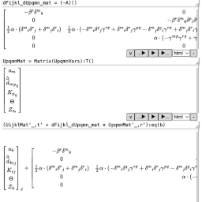
Symbolic math tool especially targeted for tensor-index-manipuplation (physics tensors, not stupid AI tensors) and code-generation.
Includes lots of examples with application to cosmology, general relativity, numerical relativity, hydrodynamics, Maxwell equations, and hyperbolic conservation laws.
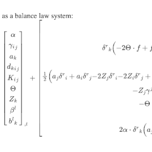
Various math worksheets I've typed up into LaTeX/MathJax. They tend to mirror the topics of the SymMath automatically-generated html output and its mixed html + live output .symmath pages.
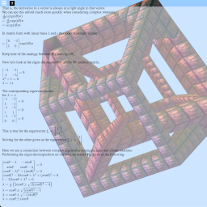
4D-mesh-renderer, especially for rendering 4D-voxels, applied to rendering a layout of a 4D hypercube, in WebGL.
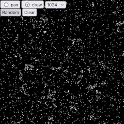
Conway's Life, running on GPU in WebGL.
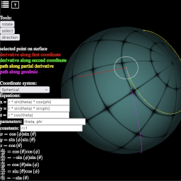
Manifold property visualization tool, in JavaScript in-browser with WebGL.
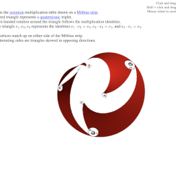
Visualization of the sub-quaternion multiplication tables found within the Octonions, aligned to a Mobius-strip, in WebGL.
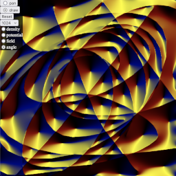
Very simple finite-difference Poisson solver on GPU in WebGL.
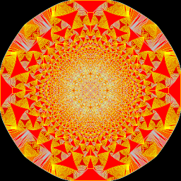
Abelian sandpile models on the GPU in WebGL.
Astronomy
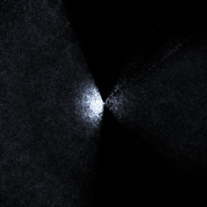
Visualizer of various galaxy surveys. Useful for visualizing the cosmic web structure.
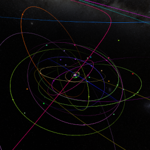
Solar system visualizer in WebGL. Includes planets, moons, small-bodies, comets, meteors, stars, exoplaents, and galaxies.
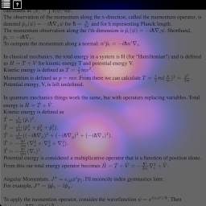
Hydrogen atom wavefunction visualization in WebGL.
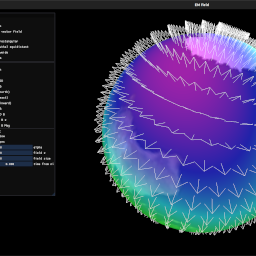
Various visualizations of the WMM 2025 dataset, including LIC, vector field. Applied to various basis options of the Earth geographic chart, with options for interpolation between them.
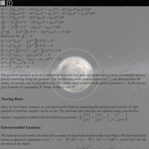
Black hole raytracer on GPU, in WebGL.
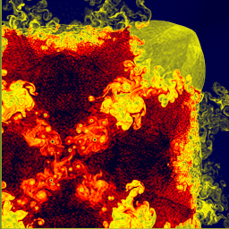
Various CFD schemes, including HLL and Roe, implemented in CPU and GPU (WebGL), in-browser, in JavaScript.
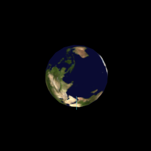
Very ugly and shoddy Thomsas-precession visualizer.
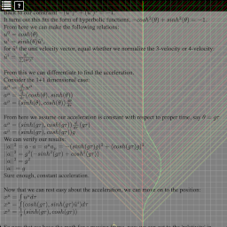
Shoddy time dilation / Twin-Paradox visualizer.
Games
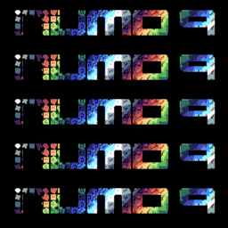
A Fantasy-Console, somewhere between Pico-8 compatible, 16-bit-era, and voxelmap-engine.
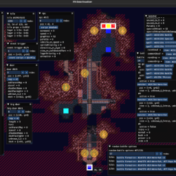
Editor of Final Fantasy VI USA for SNES.
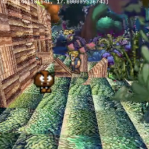
The start of a farm simulator in the vein of Harvest Moon, except with voxel engine.
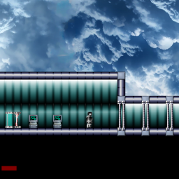
2D platformer engine, with built-in editor.
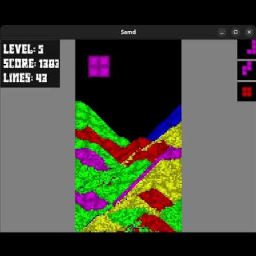
Sand-Tetris clone.
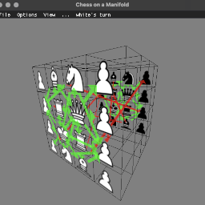
What would it be like to play chess on an arbitrary mesh manifold?
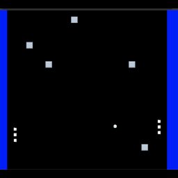
Pong, in LuaJIT+SDL, running in a browser.
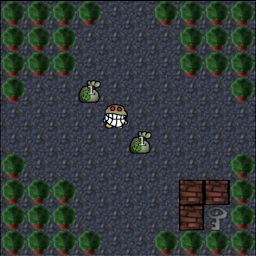
A block-pushing puzzle game.
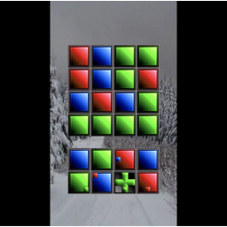
A color-matching puzzle game.
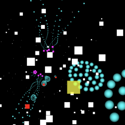
A simple 3D-bullet-hell game running on the GPU in WebGL.
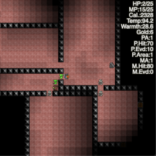
A stupid RPG game that runs in browser, written in Javascript.
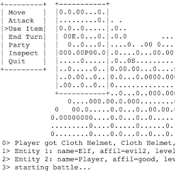
A stupid Tactical-RPG game with ascii display, written in Lua, running in-browser.
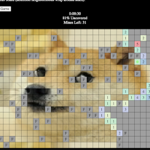
Minesweeper but with custom kernels used to count neighboring mines.
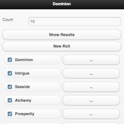
Dominion deck chooser with a useful touch-screen interface.
Mario Kart Wii stat picker. Choose what stats you want to maximize/minimize (and what weighted combinations) and it will rank karts accordingly.
fftrpg-numo9
(private repo) Mashup of Final Fantasy 6 and Final Fantasy Tactics, implemented in NuMo9. Check the NuMo9 discord server for updates.
webtactics
(private repo) Browser+server based tactical-rpg game. Succeeded by FF6T3D in the NuMo9 discord server.
TacticsLua
(private repo) Pure-LuaJIT Tactical-RPG implementation of Final Fantasy Tactics, and then a mash-up of Final Fantasy 6 in TRPG environment. Succeeded by FF6T3D in the NuMo9 discord server.
LuaJIT-in-Browser
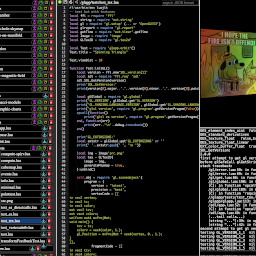
LuaJIT+SDL3+GLES3+CImGui environment in browser with emscripten, modified Lua-5.4, and forked luaffifb library.
lua-ffi-wasm
for building Lua + luaffifb to wasm for the browser port of my LuaJIT + OpenGL + SDL framework
luaffifb
my fork of the old facebookarchive FFI-for-vanilla-Lua
lua-ffi-for-js
LuaJIT's FFI library written in pure-lua for use with minimal javascript interface. Superceded by my lua-ffi-wasm project, but still around because it still has its uses.
Android
SDLLuaJIT-android
SDL+LuaJIT launcher in Android. Works as a distict repo and not as a dependency of my LuaJIT-android project. This inspired me to make LuaJIT-android after seeing how horribly bloated (wasting 100x-1000x the required disk space) all Android projects are.
LuaJIT-android
LuaJIT on android, uses my lua-java project to write android apps in pure LuaJIT. .dex classes are generated and side-loaded at runtime. No more need for Android Studio!
LuaJIT-android-lib
Makefile for cross-compiling luajit library and binary for android
SDL-in-LuaJIT-android
This is another SDL-with-LuaJIT-in-Android but instead of running SDL first, it runs LuaJIT first, then SDL within it
Bible-android
My first example of my LuaJIT-android framework: a Bible app, using a no-studio no-gradle build. Repo is 100x smaller, apk is 100x smaller, RAM usage is 100x smaller.
How did the modern state of software become so apathetic?
Lua
lua-ext
useful extensions to Lua base libraries
http-lua
simple http server, complete with correct content-types from iana.org
lua-gui
luajit driven widget library for opengl/sdl
lua-dist
create a distributable for a lua/luajit project
earthquake-shear-lines
earthquake shear lines
lua-ffi-bindings
FFI bindings for LuaJIT
lua-imgui
imgui lua wrapper
lua-sdl
lua version of SDL app framework
earth-magnetic-field-lua
visualization of the 2020 WMM data
langfix-lua
Pure-Lua fix for some things in the language, especially missing in LuaJIT
lua-integrate
integration methods, explicit and implict, implemented in Lua
solarsystem-lua
original Lua version of the solarsystem project
lua-url
yet another url library
lua-websocket
WebSocket server using LuaSocket
lua-plot2d
2d interactive plotting program based on luajit
hydro-cl-lua
yet *another* hydrodynamics/hyperbolic conservation law solver, this one in LuaJIT using OpenCL/OpenGL
struct-lua
helper for generating ffi structs
zeta3d-lua
(private repo) Voxel metroidvania. I should publicise it but it's probably in a broken state.
lua-image
LuaJIT image save/load library
include-lua
LuaJIT FFI binding generation
polynomial-complex-roots
plotting polynomial roots in complex plane
chinese-checkers-on-sphere-lua
Chinese checkers on the surface of various platonic solid based geodesic circles.
mesh-lua
Lua 3D Mesh library centered around Alias-Wavefront .obj format.
lua-audio
LuaJIT audio
lua-cl
yet *another* Lua/OpenCL binding project
lua-clip
lua wrapper for my fork of libclip
autoupdate-lua
working on an auto-updater to go with lua-dist and lua-zip
zip-lua
libzip Lua classes
lua-interpreter
A Lua interpreter in Lua. Complete with upvalue access, for use as a drop-in debugger.
lua-bit
luajit bit compatibility for vanilla lua
solver-lua
linear system solvers
lua-jfnk
Lua implementation of Jacobian-Free Newton-Krylov solver
vec-ffi-lua
vector class for LuaJIT based on ffi / primitive types
vec-lua
vector math library for Lua
lua-template
Lua Templates
lua-stl
whatever STL classes I want to implement, but in LuaJIT
lua-parser
Lua parser and abstract syntax tree in Lua
lua-matrix
matrix class for lua. in the spirit of matlab syntax.
luafilesystem
Reimplement luafilesystem via LuaJIT FFI with unicode facilities
lua-gnuplot
gnuplot wrapper
complex-lua
Lua complex number class, for FFI and vanilla
lua-app3d
3D-application support classes
cl-cpu-lua
My shoddily made CPU device replacement for OpenCL in LuaJIT
lua-ffi-c
write c code inside your lua code. use gcc and luajit ffi to build and link while you run.
cayley-dickson
simple script to generate dot files of cayley-dickson multiplication tables
n-points-lua
N-points evenly spaced on a sphere, with or without repulsive-forces.
super-metroid-randomizer-lua
super metroid item / enemy / door randomizer
lua-plot3d
3D interactive plotting program. got sick of gnuplot's 3D graph display running at <1 fps.
lua-lua
LuaJIT bindings for LuaJIT. Allows your LuaJIT state to access itself and/or create sub-states.
lua-thread
pthread library in LuaJIT, using lua-lua LuaJIT-states-in-LuaJIT.
lua-gl
OpenGL wrapper classes and SDLApp subclass for LuaJIT
lua-vk
Vulkan wrapper classes and SDLApp subclass for LuaJIT
lua-wgpu
WebGPU wrapper classes and SDLApp subclass for LuaJIT
lua-java
LuaJIT access to Java through JNI
git-lua
useful lua scripts for managing multiple git repositories
lua-make
yet *another* build script system
lua-ips
Lua based IPS file patcher
zeta-lua
A 2D platformer engine in LuaJIT
force-directed-graph-lua
force directed graph utility in Lua
geographic-charts-lua
Putting all my common map projections in one place
seashell-lua
seashell parametric function class viewer
volume-renderer-lua
tetris-attack-lua
following-fdtd-lessons
me following some fdtd lessons online
lua-neuralnet
neural network classes in Lua
browser3d-lua
Lua+SDL+OpenGL+ImGUI based browser / for remote script execution. Not a HTML/JS browser, those are dumb.
surface-from-connection-lua
reconstructing surfaces from a rectangular grid of connection coefficients
lua-math
lua common math functions
moldwars
performance testing some GL + SDL + LuaJIT code
lua-metric
lua+imgui version of the html+emscripten+lua version of the lua version of my metric / diff geom visualization tool
gravitational-waves-lua
1D ADM gravitational wave simulation
SphericalHarmonicGraphs
rendering of spherical harmonic + associated legendre graphs
sand-attack
connect colored lines of falling sand
pong-lua
pong in lua
lambda-cdm-lua
lambda-CDM model time integrator with gui
efesoln-cl-lua
LuaJIT/OpenCL port of my Einstein Field Equation solver project
prime-spiral-lua
plot that stupid prime spiral pattern
nbody-gpu-lua
n-body simulation on gpu in LuaJIT
convert-to-8x8x4bpp
Messing with algorithms for converting RGB images into SNES format: 8x8 tiles of 4bpp, each tile with a unique upper 4bpp, which index into a 256-bit palette.
earth-transport-network
Earth transport network I designed based on the Apollyon gasket problem. Works as an intermediate between a space-elevator and a dyson-sphere. Powered by planet rotation.
seismographic-stations
thought i would plot the seismo data around the world
rule110-lua
Rule 110 in GLSL in Lua
dungeons-n-munchers-lua
line-integral-convolution-lua
line integral convolution in lua
lua-gameapp
putting some things common to games in one place
waves-in-curved-space
visualization of light cones in arbitrary metrics in 2+1 space
noaa_flares
counting and graphing the number of flares that NOAA posts online
mimetypes-lua
Lua class to get and cache mime types
query-simbad
lua lib for querying Simbad
noaa_drap
NOAA DRAP query tool
lua-csv
CSV parser in Lua
lua-selfmodify
self-modifying code wrapped in a genetic algorithm. lots more buzzwords too.
grem-lua
(WIP) yet *another* attempt at solving metric using the Einstein field equations specified along a grid
lua-netrefl
synchronizing data across the network
texture-atlas
texture atlas generator
sphere-grid-lua
sphere grid
chompman
not pacman in 3D
lua_to_js
Lua to JS transpiler
ascii-art-vpl
ascii art visual programming language
elf-lua
Me poking around ELF format with Lua
tensor-lua
lua based tensor calculator
space-filling-curve
space filling curves ... which turned into a L-system project
mono-lua
Mono C# in LuaJIT
smooth-graph-lua
plot successively smoothed graphs
lua-simplexnoise
LuaJIT simplex noise
fibonacci-modulo
fibonacci sequence modulo plotted on circles
stupid-text-rpg
a stupid text-based roguelike tactical rpg
stat-lua
some useful classes for gathering statistics
python-lua
Python bindings and wrappers for LuaJIT
leftargs-lua
What if function arguments went on the left side instead of the right side of a function call?
lua_to_batch
utility for converting from Lua scripts to Windows Batch files
lua-threadmanager
simple thread manager for Lua
netcdf-lua
netcdf luajit class wrapper
lua-bignumber
a big integer / number library
lua-svg
SVG generation functions for Lua
earth-surface-time-dilation-lua
just what you would think
htmlparser-lua
html parser in lua
lua-resourcecache
resource cache
modules-lua
chop up code into pieces, only use the parts that are necessary, useful when your compiler compiles everything and compile times are far too slow
ncurses-lua
ncurses-lua
c-h-parser-lua
C header parser in Lua
numerical-relativity-codegen
code generation for my numerical relativity projects
fullcallstack-lua
lua function wrapper to provide full call stack instead of that abridged nonsense in the default functionality
quantize-tiles
take a picture and quantize the grid-aligned tiles
faraday-cage
Calculates EM field around Faraday cage.
geo-center-earth
find the center of the earth by surface area
VectorFieldDecomposition-lua
decomposing and annotating vector fields
cfdmeshlua
2D Roe scheme on an arbitrary mesh, written in Lua
pi-z-curve
pi along a z curve
teukolsky-waves
regge-lua
(WIP) Regge calculus simulation of 1+1 spacetime.
preproc-lua
C preprocessor in Lua
lua-profile
profiler for lua code
emoji-lua
Lua but with the keywords, symbols, libraries replaced with emojis.
lua-local-default
Make Lua use locals-by-default in functions ... with Lua!
lua-0-based
pure-Lua implementation of 0-based tables
sql-lua
Some SQL table and field classes in Lua for generating SQL commands
springs-meh-lua
meh
gpu_from_pde-lua
(WIP) PDE solver on GPU, all in Lua
all-tensor-muls
count all unique tensor products for specific input and output degrees
obs-buildvideo
quick script to convert obs capture .ts into .mp4
GalacticRotationCurves_2021Ludwig
Trying to reproduce the graphs from this paper, since the paper itself is not so clear on what equations are used to calculate most of the graphs. (I believe I've found a few typos in constants in the process of reproducing them...)
lua-multigrid-poisson
multigrid poisson solver, first using my matrix library in Lua, next using my OpenCL wrapper in Lua
thirteen-lua
solver for the solitaire game 'thirteen'
poker-lua
poker in Lua, comes with a stupid AI that you can beat pretty easy
cards-lua
simple library for card games
C++
CFDMesh
same as my Lua mesh-based CFD simulation, except now moving it to C++ so it'll run a bit faster
HydrodynamicsGPU
Schemes of Roe, HLL, HLLC, Burgers; Equations of 1D, 2D, 3D; Euler, SRHD, Maxwell, Bona-Masso ADM; Implemented in OpenCL
Hydrodynamics
C++ CFD sim based on Tensor template framework
NBodyGPU
yet another N-Body simulation in OpenCL
CellularGPU
OpenCL driven Conway's Game of Life
AsteroidsSPH
asteroids with SPH and maybe other tricks
EinsteinFieldEquationSolution
inverse solves G_ab = 8 pi T_ab for the metric tensor g_ab based on primitives used to compute T_ab
VolumeTest
numerically verifying formula for volume of any simplex in any dimension
SoftwareRenderer
This is a software implementation of a 3D rasterizer and renderer I made way back during my MSc at Oregon State. I kept meaning to post it and kept forgetting. Until now. It includes software implementations of a few OpenGL features. Linear, normal, and spherical, and a few other texgen features. Linear and nearest texture lookup. I forget all of what else. I provided the Quake1 model rendering source code so you can plug in whatever Quake1 models you want as well.
Topple
create images of Abelian sandpile models
Solver
collection of linear and nonlinear solver classes
tripletriadminmax
(private repo) Min-max algorithm applied to Final Fantasy 8's Triple-Triad. It still needs some kind of heuristic, it's not working as well as it should. Private until I get it in a less shameful state.
clip
I forked someone's libclip to add C bindings to its C++ classes so I could expose it to LuaJIT's FFI.
CLCommon
library for all OpenCL projects
Parallel
c++ asynchronous for-each and reduce operations
CLCPU
OpenCL for CPU
CxxAsLua
made analogous C++ classes to Lua functionality. could be used for a translator.
Tensor
C++ template metaprogram driven differential-geometry math-tensor library. Complete with implicit multiplication and index-notation operations. Not stupid AI "tensor", which aren't tensors at all, but are just high-dimension tuples of numbers.
WebGPUApp
WebGPU C API demo.
VulkanApp
Working out a foundation class based on SDLApp for Vulkan projects.
Relativity
General relativity 3+1 formalism simulation. My first attempt, using finite-difference, long before I made a proper framework and libraries surrounding my physics simulations.
worldgen
procedural world generation
Profiler
C++ profiling code
ImGuiCommon
Class-wrapper for SDLApp's to use ImGui.
GLApp
OOP-izing SDL 3 for GL apps.
ImageProcessing
gradient domain image processing
Image
image loading library in C++. I'm slowly collecting formats.
NeuralNet
simple c++ backprop network class
LuaCxx
OOP wrapper for Lua
SDLApp
Foundation class for SDL applications
GLCxx
C++ GL wrapper classes
Common
common C++ and Make stuff
oop-in-c
bored so I'm trying to reproduce C++ classes in C with using ugly macro programming
Github Repos I still have to sort ...
js-util
WebGL oop-ized
gl-js
putting my js WebGL wrapper classes in one place
MatMulKernelTest
performance test of varying fixed-size matrix multiply kernel executed at each cell in a 256x256 grid
DFCrack
DFHack ported to LuaJIT
bank-game-js
Bank: A bomb block pushing puzzle game
lua128
128-bit Lua
wii-sdl-luajit
Wii devkitPro + LuaJIT + SDL, scripts I found online somewhere.
wii-luajit
LuaJIT for Wii / devkitPro, scripts I found online somewhere.
FFTactics_BlenderPlugin
Blender plugin for importing Final Fantasy Tactics .GNS files
reverse_string_c_cpp_rust
reversing a string in c, cpp, and rust, and comparing the resulting binaries and preformances
scrabble-solver
a multithreaded scrabble solver
multiplicative-persistence
multiplicative persistence search
Sod_exact
exact solution for Sod shock tube test
dungeons-n-munchers-js
don't even ask :-p
zeta-js
Very very preliminary start of a procedural platformer in javascript.
biggun-quake
A quake 1 mod I made.
More old repos
christopheremoore.net in archive.org
I've got even more old repos on my old website, which now only exists in archive.org, since I am too poor to pay for fees. Despite programming nearly every day of my life since I was a child, despite having a BSc in Comp Sci and Math and MSc in Comp Sci, despite being a decade ahead of the "deep learning" craze, despite writing my own CAS and numerical relativity GPU simulations that would run on a laptop while the "experts" simulators needed a supercomputer ... I have not had a software job since 2018.
My enemies are gloating over me. My friends remain silent. Maybe they were never friends to begin with.